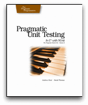
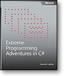

Books on TDD and NUnit

|
Test Driven Development in Microsoft .NET by James W. Newkirk and Alexei A.Vorontsov As you might expect from two of the developers of NUnit, this book combines valuable insights into the process of test-driven development with detailed information on the use of NUnit. Click here for more information. |
|
Pragmatic Unit Testing in C# by Andy Hunt and Dave Thomas So far, this is the most up to date book on NUnit. The Pragmatic Programmers reviewed a pre-beta version of NUnit 2.2 and explain most of the new features. As you might expect, there approach is eclectic and well... pragmatic. A good introduction for practicing programmers. Click here for more information. |
 |
|  |
Extreme Programming Adventures in C# by Ron Jeffries This one is a bit different, but a must read for anyone who wants to watch an expert programmer find his way into C#, .NET and NUnit itself. By far the most fun of any book here, this one is by no means a reference but - like it says - an adventure. Click here for more information. |